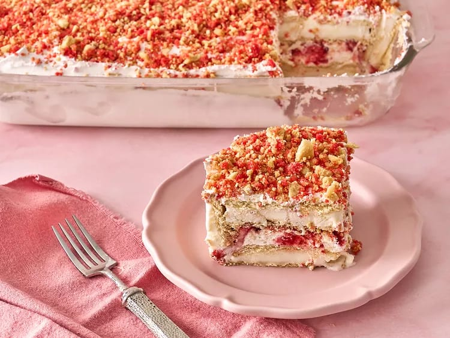

Home
Strawberry Ice Cream Cake

How to Make Strawberry Ice Cream Cake
Ingredients
- 2 1/2 cups Strawberry Shortcake Ice Cream Topping
- 16 to 20 vanilla ice cream sandwiches with vanilla outside “wafers,” such as Prairie Farms® Double Vanilla ice cream sandwiches
- 16 ounces whipped topping
- 1/2 cup strawberry ice cream topping
- 1 cups sliced strawberries
This strawberry shortcake ice cream cake, made with ice cream sandwiches, a crunchy strawberry shortcake topping, and fresh strawberries, is a sweet treat.
- Step 1: Prepare ice cream topping according to recipe. Measure out 2 1/2 cups. Reserve the rest for another use.
- Step 2: Place half of the ice cream sandwiches in the bottom of a 9x13 dish in a single layer.
- Step 3:Top with half of the whipped topping. Drizzle evenly with strawberry ice cream topping and top with strawberry slices. Sprinkle half of crunchy ice cream topping over the strawberries.
- Step 4:Add remaining ice cream sandwiches in a single layer. Top with remaining whipped topping and crunchy ice cream topping.
- Step 5:Freeze overnight or at least 8 hours.